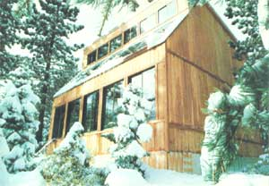
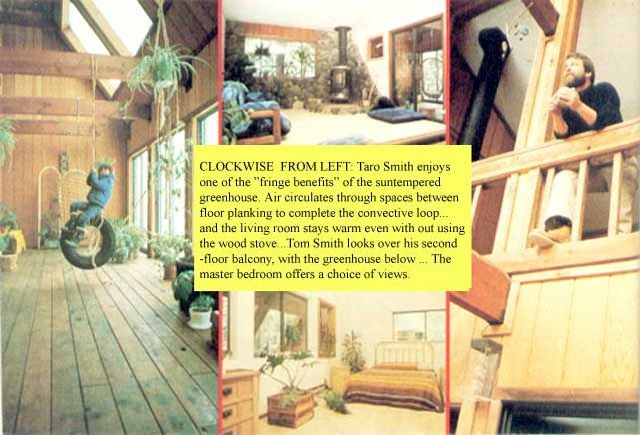
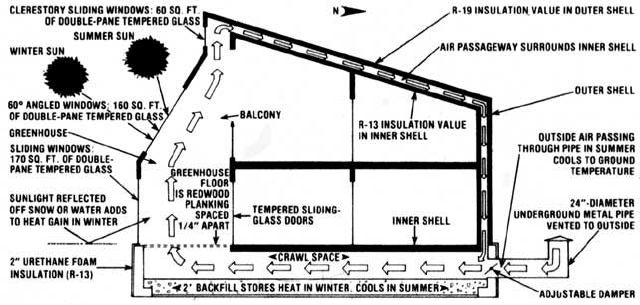

An ancient Japanese proverb states that "the simplest solution is the best". If that's the case (and we think it is!), then this attractive house-nestled high in California's Sierra Nevada mountains-is one of the better solar-heated homes around, since its design alone allows it to store heat during the sunlight hours and release that warmth, slowly, to the interior throughout the day and night.
In order to find out more about the unusual dwelling, MOTHER sent staffer Richard Freudenberger to Olympic Valley, California where-surrounded by several inches of snow and subfreezing temperatures-Richard talked to owner/designer Tom Smith (in a comfortably warm atmosphere) and questioned him on various aspects of the house . . . including the all-important "passive" approach to its heating.
The number of solar houses being designed, built, and lived in grows by leaps and bounds every year. And, more often than not, these "newcomers" on the solar scene are passively heated. Let's face it... if you're building a house from scratch, why bother with pumps and pipes (which are not only expensive, but are also subject to periodic failure) when you can get the same results from a system that uses nothing but a well-planned design to achieve its goal?
Furthermore, "active" heating systems require a collector . . . something that [1] most likely will be commercially produced and costly, [2] will probably detract from the beauty of the house, regardless of how aesthetically pleasing the structure otherwise is, and [3] will usually necessitate additional engineering and construction considerations.
These factors helped Tom Smith and his architectural advisor, Lee Butler of San Francisco, decide to go with a totally passive system. And-after 20 months of research and a full year of living in the house-Mr. Smith has no regrets. If anything, the structure's efficiency has exceeded his expectations . . . especially since many days are overcast in the Sierras, and even in bright weather the trees native to the area block much of the afternoon sun.
The Smith house has two major parts: [1] the load-bearing outer shell, which incorporates a 300-square-foot greenhouse on its south side, and [2] the inner shell, which is separated from the exterior framework by a 12-inch air space all around (except on its east and west walls, which are shared with the "outside" structure).
As the low winter sun beats down on the building, its rays pass through the double-strength glass on the face of the greenhouse (a good deal of which is angled to catch more light), heating the air within. That warmed air rises, drawing behind it-through quarter-inch spaces between the planks of the greenhouse floor-cooler air from the crawl space below the house.
Then, when the heated air reaches the upper limits of the greenhouse, it's drawn through the air passageway between the roofs of the two structures, down through the same channel at the north wall of the house, and back into the crawl space ... where it heats two feet of backfill spread atop the structure's well-insulated foundation.
Hence we have an "envelope" of warm air-which is kept constantly circulating by convection-surrounding the inner shell of the house. This envelope, then, not only tempers the inner structure, but also warms the thermal mass beneath the house (which can maintain its warmth for up to three days). Additionally, the air space between the two shells serves as a "buffer zone" to the cold outside air.
At night, the cycle is reversed. As the air within the greenhouse loses its heat (mainly because of the large amount of glass on the structure's surface), it begins to fall, forcing the warm air in the crawl space to move up the passageway in the north wall and through the channel in the roof... where it eventually spills into the greenhouse to start the convective cycle all over again.
In the warmer months, the envelope works in a slightly different manner. The summer sun-now a good deal higher in the sky-can't feed as much heat into the house because of the angle at which it strikes the three rows of windows. Whatever heat does pass through the glass, however, rises and escapes out the clerestory transoms, which can be easily opened. In addition, there's an outside vent pipe-routed underground-which feeds into the crawl space at the north side of the house. A controllable damper on this pipe allows the desired amount of fresh outside air to be drawn through both the crawl space and the air channel between the shells ... cooling the structure as it goes and finally exhausting from the clerestory windows with the heated greenhouse air.
Of course, in hot climates, extra steps might have to be taken to help cool the structure (window shades, a roof overhang, or additional vents), but these solutions are still passive ... and comparatively inexpensive.
The house is designed according to a principle Tom calls the "envelope idea" . . . that is, the living quarters are surrounded by an envelope of tempered air. In place of a collector, a 300-square-foot greenhouse-faced with 390 square feet of double-pane, tempered glass-is incorporated into the south-facing side of the house. Behind this solarium, the structure's three bedrooms and two living areas are isolated from the outer walls and roof of the house by an inner "shell" . . . which is separated from the exterior by at least 12 inches of air space all around (with the exception of the east and west walls, which are common to both frameworks). This air space provides a passageway for the flow of warm air . . . not only creating a convective loop, but also maintaining the inner shell at a comfortable temperature (while still providing a "buffer zone" to the cooler outside shell).
So, in effect, the walls of this inner compartment act as both collector and storage medium. And this system-coupled with the fact that there are two feet of backfill in the insulated crawl space beneath the house-guarantees that heat gained during sunny periods (about 400,000 Btu's on a typical January day, as near as Tom can figure it) will be stored for up to 72 hours.
Naturally, Tom's envelope works just fine in the winter . . . but what about the summer? Well, during the warmer months, the "flow" cycle is reversed. When Smith opens the clerestory windows at the upper face of the house, the hot air gathered there is forced to evacuate, drawing behind it cooler air pulled from any open windows below. In addition, fresh outside air is drawn through an underground vent pipe at the north side of the building, and passes above and below the shell of the inner structure, cooling the area within.
The basic design of the envelope house allows it to be about 80% energy self-sufficient in both winter and summer ... an impressive figure considering the simplicity of the passive system. However, additional heat can be supplied by a wood-burning stove, which more than makes up the remaining 20%. And, if an extended cold snap should happen along, the system is further backed up with baseboard electric heating . . . which- although it hasn't been needed yet-is required by local building codes and lending institutions.
On the other side of the coin, summer cooling has presented no problem at Tom's Olympic Valley location. However, he's quick to point out that-if the house were to be constructed in a hotter clime-simple adjustments (like the installation of window shades, extra vents, or a roof overhang) would provide ideal cost-effective solutions.
Unlike many other energy-efficient houses, the Smith dwelling doesn't require an overabundance of insulation. A standard resistance value of R-19 is achieved throughout the exterior shell with rigid insulation board, and the inner shell is insulated-in the same manner- to R-13. It's important to note that-although both shells do require insulation for the system to work properly- excessive thermal protection not only defeats the purpose of the dual-surface design, but wastes money . . . which could be more wisely spent on heavier glass for the greenhouse wall.
Tom also took full advantage of insulation when he designed the structure's foundation. Because it serves as a thermal storage area, the "base" of the dwelling was insulated (with two inches of urethane foam) to a value of R-13 . . . preventing heat within the mass from escaping to the outside.
The choice and placement of windows is, Smith says, every bit as important as insulation. Naturally, the south-facing windows are one major consideration, since they're at the "business end" of the house. Double-pane glass is used here (although single-pane glazing would cost less and admit more heat) because the loss of stored warmth through thinner material at night would exceed the slight gain reaped during the day. The east-and west-oriented windows are also double thick, and the north side of the house doesn't have "viewports" at all (though double- or triple-pane glass could be installed if desired).
As a final precaution against the infiltration of cold outside air, the owner used caulking or weatherstripping on everything "openable" . . . including the two doors that constitute the double-lock entry, or vestibule. In this way, all drafts are eliminated, and the "airlock seal" goes a long way toward keeping the house comfortable . . . especially when the outside temperature plummets to below freezing.
Even though the operation and design of the naturally convective heating/cooling system are unorthodox, the construction techniques used in the house are not. Its foundation-aside from the insulation that shields it from the earth-is nothing more than block and poured concrete. And resting on this substructure is a network of piers which not only support the floor of the house, but also hold it several feet above the foundation . . . providing room for the necessary two feet of heat-storing backfill and circulation air space. This setup, then, is no different from a standard crawl space in any conventional dwelling.
Orthodox construction methods were used in the framing, too. The walls of the outer shell are 2 X 6 studs, and 2 X 12 beams are used in the ceiling (to support the heavy snow load). All windows and glass are standard commercial units, as are the prehung doors. The roof of the inner shell is merely fastened to the bottom of the 2 X 12 beams, and the north side of this interior structure is simply an extra 2 X 4 stud frame wall. Actually, then, the "inside layer" isn't load bearing, so it's no more difficult (or expensive) to construct than any other interior wall scheme.
Of course, there are those who will maintain that the cost of the additional materials required for this inner shell outweighs its advantages. Not so, claims Mr. Smith ... he insists that the overall expense is lower because a large saving is realized by the elimination of expensive heating ductwork within the walls of the house.
In all, the entire cost of construction-including the builder's profit-came to a grand total of $53,258 (slightly over $28 per square foot for a 1,900-square-foot house . . . which is quite reasonable when you consider that the average cost per square foot in the Olympic Valley are is $35 to $37). Of course, this figure would be drastically reduced in an owner-built house, and even further savings will be realized over the years because of the structure's self-sufficiency.
Furthermore-since the structure is conventional-it fully complies with all local building codes (these differ from county to county) and can therefore be financed through normal lending institutions. Best of all, the design is flexible enough to be adapted to whatever changes might be dictated by location, climate, building codes, or even space requirements.
It's difficult to explain the distinct feeling of satisfaction that this house provides. Unlike a conventionally heated home, which often seems "stuffy", the Smith residence has a natural "outdoor" feel to it ... and this wholesome feeling is amplified by the fact that the entire south wall of the structure is open-at least visually-to the great out-of-doors.
In addition, there are no drafts or artificial convections inside the house. All air movement takes place within the "envelope" and heats the inner shell through absorption (with the exception of the greenhouse, which gets direct sunlight and is in itself part of the "envelope" ... by virtue of the fact that its floor planks are spaced 1/4 inch apart for airflow).
Of course, this enclosed current of air doesn't preserve a constant temperature throughout the home's interior, but a slight thermal variation from area to area is actually desirable, since it relieves "physiological boredom". Another benefit of Smith's design is that it keeps the relative humidity at an acceptable level (between 50 and 60%), rather than drying the air out as central heating units tend to do.
The "envelope" idea incorporated in this structure is a good one ... it works as well in practice as it does in theory. However, there are disadvantages-though easy to live with-that should be noted. The first is that the passive system, because of its nature, can only store thermal energy for two or three days . . . less than the typical active system. Also, the design is such that windows-especially those on the north side of the house-are difficult to install (or, at best, expensive) because of the double shell.
On the bright side, though, it can't be denied that the system is cost-effective . . . from the standpoint not only of initial investment but also of maintenance. And-once the house is built-heating is for the most part a " free ride ".
Almost as important as the economy of the house is its overall flexibility of design. As long as there is an expanse of glass on the south-facing wall and a passageway around the inner shell for air to circulate, the layout of the rooms inside can be modified to suit personal tastes. The same adaptability applies to other features of the house, too. The entrance can be incorporated into the greenhouse (along with the stairway, if desired), the floor of the greenhouse can be covered with any of a variety of materials (as long as floor vents are used), and storage space can be added (with the construction of a peaked roof) above the air passageway.
Now that Tom has been "living in an envelope" for a while, he's had time to evaluate his ideas on the basis of experience rather than theory . . . and Smith is more than pleased with the results. He does plan to add a work loft in the upper portion of the greenhouse and-if finances permit-a hot tub (warmed by the exhaust from the wood stove) set into the greenhouse floor. But, even without these "luxuries", the Smith "thermal envelope" house is a mighty pleasing package!
EDITOR'S NOTE: Tom Smith and Lee Butler have compiled a handbook (complete with floor plans and construction drawings) which describes the house and its operation in detail. The book is available for $18.95 from Tom Smith, P.O. Box 2356, Olympic Valley, California 95730.
|
 STAFF PHOTOS A wintry day provides day provides the perfect setting for the undeniably beautiful Smith residence. Sunlight reflected off snow can furnish up to 30% of the home's heating needs |
 |
 |